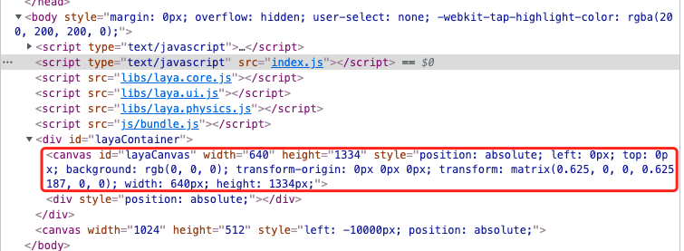
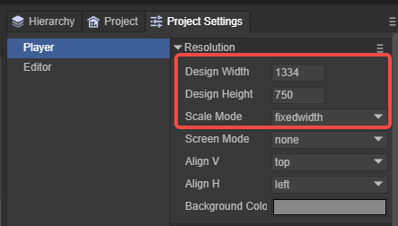
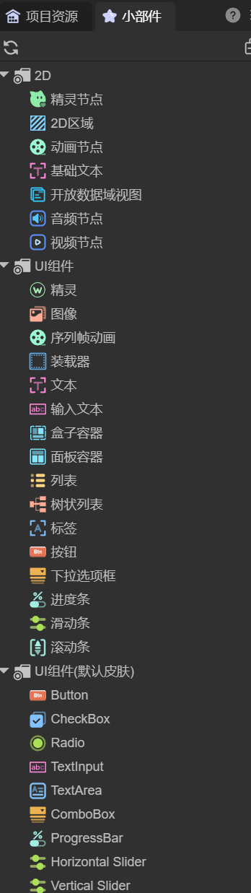

2D基础概念
Author : Charley
本篇介绍除3D基础概念之外的一些引擎基础概念。
一、通用的基础概念
1.1 画布
画布是浏览器提供的 canvas 元素，如图1-1所示：

（图1-1）
LayaAir 引擎的所有可见画面，都是逐帧绘制在画布上的。引擎通过每秒绘制多帧图像，实现连续播放的动画效果，这也是游戏运行是否流畅的重要性能指标之一。
画布就像画家的画纸，是每一帧图像的承载容器。没有画布，引擎便无法进行可视化渲染。
帧数越高画面越流畅，通常是60帧是满帧，但设备的不同会有所差异，例如有的机型上可以达到90帧满帧或者120帧满帧。
LayaAir 引擎中的画布大小，取决于项目中设定的设计宽高和屏幕适配策略。如图1-2所示：

(图1-2)
在不同的设备分辨率下，会导致画布大小可能有所变化。这些知识，在屏幕适配的文档会展开介绍。
1.2 舞台
舞台（Stage）是 LayaAir 引擎在画布（Canvas）上用于绘制游戏画面和处理交互事件的实际可视区域。
可以将画布比喻为一张画纸，而舞台就像画纸上的作画区域。画家是引擎，只能在舞台规定的范围内进行绘制和交互。无论画布尺寸多大，超出舞台区域的内容都不会显示。
例如： 设想你把一张纸铺满整个桌面（画布全屏），但如果只允许画家在纸的中间区域作画（舞台未全屏），那么最终呈现的画面仍受限于这个中心区域，其他部分将被裁剪或忽略。
因此，对于需要全屏适配的游戏，仅将画布设置为全屏还不够，还需将舞台尺寸同步扩展到与画布相同，确保画面内容完整显示。
舞台大小的设置依赖于项目的设计宽高和屏幕适配策略。建议结合《屏幕适配》文档一同阅读，以更深入理解舞台与适配机制之间的关系。
1.3 对象
对于有编程基础的读者而言，“对象”通常指的是类的实例，这是面向对象编程中的基本概念。
从更广义的角度来看，凡是具有属性结构，或可以动态设置属性的数据结构，也可以被称为“对象”。例如，JavaScript 中的 JSON 对象，或一个空对象字面量 {}，都属于广义上的对象范畴。
1.4 节点
在 LayaAir 引擎中，Node（节点）类是所有可加入显示列表对象的基类。2D 的基础精灵 Sprite 和 3D 的基础精灵 Sprite3D 都继承自 Node。不仅如此，所有继承自 Node 的子类或孙类对象，统称为“节点”，如：Sprite 节点、Image 节点等。
只有继承自
Node的对象，才具备添加子节点的能力。
1.5 显示对象、容器对象
在节点体系中，具备可视内容（如图片、文字、动画、模型等）的节点被称为显示对象。而有些节点本身不参与渲染，仅用于组织和挂载子节点，这类节点被称为容器对象，例如：Sprite、Sprite3D、Box 等。
有时候，同一个节点对象，既可以作为显示对象，也可以作为容器对象。
例如Sprite，当设置了纹理资源时，它即为显示对象；若未设置纹理，仅用于管理子节点，则作为容器对象使用。
1.6 显示列表
显示列表 是一个抽象概念，可理解为基于舞台（Stage）构建的节点树结构。所有参与渲染或组织结构的节点（包括显示对象与容器对象）都位于显示列表中。显示列表负责统一管理引擎运行时显示的所有节点对象。
需要注意的是：Sprite 与 Sprite3D 分别作为 2D 和 3D 的基础显示对象，它们所属的节点体系不能互相嵌套。也就是说，Sprite 及其子节点不能作为 Sprite3D 的子节点，反之亦然。
1.7 图形API
图形 API（Graphics API）是开发者与底层图形硬件之间的桥梁，提供了一套编程接口，用于控制图形的绘制与渲染。通过图形 API，我们可以在程序中绘制图形元素、加载纹理、控制变换效果，最终由显卡将这些指令转换为可显示的画面。无论是 2D 还是 3D 图形的实现，图形 API 都是不可或缺的底层支持。
在 HTML5 环境中，当前主流的 3D 图形 API 是 WebGL，WebGL 的下一代替代者 WebGPU 也正在逐步被浏览器支持。LayaAir3引擎同时支持WebGL与WebGPU。
1.8 图像
图像是指一张可视化的二维图片数据，通常来自本地文件或网络资源。它可用于直接展示，也常作为素材参与图形绘制、纹理生成等后续处理。
常见的图像文件以 .png、.jpg 等格式结尾，是最常用的资源类型之一。与音频、视频、动画、图集等素材一样，图像属于游戏项目中的基本资源类型。
1.9 纹理
很多新手常常将纹理和图像混为一谈，实际上，它们是两个不同的概念。
纹理是图像在图形渲染系统中的一种表示形式，通常指将图像数据上传到 GPU 后形成的图形资源。纹理可用于图形管线中的贴图、采样、混合等操作。可以理解为：纹理是“能够被显卡识别并参与绘制”的图像版本，而图像只是纹理的来源之一。
例如，压缩纹理就与普通图像资源（如 PNG、JPG等）不同。虽然它同样以文件形式存储在磁盘中，但其数据格式已经符合 GPU 的纹理读取标准，加载时可以直接上传到 GPU 使用，无需经过解码。这类纹理资源具有更高的加载效率和更低的内存占用，常用于优化大规模图像资源的加载与渲染。
此外，渲染纹理（RenderTexture）是一种特殊的纹理，它不是从图像文件中生成的，而是将渲染结果直接输出到一张纹理上形成的。这类纹理的像素内容来自程序的绘制结果，而非磁盘资源。
渲染纹理常用于将某个 3D 节点、场景或摄像机的渲染输出“截取”为纹理，并用于后续显示。例如，可将3D场景画面渲染到一张纹理上，再将该纹理应用在 2D 节点中。
与普通纹理不同，RenderTexture 的内容是动态生成的，可以每帧刷新，也可以按需更新。它是实现屏幕缓存、离屏渲染（off-screen rendering）、后期处理等高级图形效果的重要工具，是 2D 与 3D 图形系统中不可或缺的核心纹理类型之一。
二、2D专属概念
2.1 UI
UI 是英文 User Interface 的缩写，中文意思是“用户界面”。在游戏和应用中，UI 指的是用户在屏幕上所能看到、点击、交互的一切界面元素，例如按钮、文本框、滑动条、进度条、菜单栏、信息面板等。
UI 本身不直接参与游戏的物理或逻辑行为，但它是用户与游戏系统之间进行交互的桥梁。玩家通过点击按钮、滑动摇杆、输入文字等方式与游戏互动，游戏也通过 UI 向用户展示状态信息，如角色血量、得分、任务提示、对话内容等。
在 LayaAir 引擎中，UI 系统提供了一套封装完善的 UI 组件库和配套功能，方便开发者构建常见的用户界面。但需要注意的是，UI 的概念并不限于 UI 组件系统本身——凡是用于与用户交互、信息展示的可视对象，都可以称为 UI。例如，使用 2D 基础对象（如 Sprite）制作的界面，同样属于 UI 范畴。
因此，广义的 UI 是一种界面交互的职能，而不是特定组件的专属称谓。UI 系统只是实现 UI 的一种工具或方式。
2.2 小部件
UI小部件是用户界面中组成元素的基本单元，通常指功能独立、可复用的界面组件，用于实现按钮、文本框、滑动条、复选框等交互控件。
简单来说，UI小部件就是构建界面的“积木块”，它们封装了显示和交互功能，方便开发者快速搭建和管理界面布局。
在 LayaAir3 引擎中，UI小部件主要分为两类：
- 2D基础对象：属于引擎原生的2D节点系统，不依赖任何UI框架，通用于任意UI方案。
- UI系统组件：即UI框架所提供的可视化控件，依赖具体的UI系统。
如图2-1所示：

(图2-1)
了解更多，可查询相关的《UI小部件》文档。
2.3 UI运行时
UI 运行时 是 LayaAir 引擎在 UI 系统中提供的一种运行时绑定机制，用于简化复杂 2D 节点对象的代码管理逻辑。
基于UI运行时，开发者可以在编辑器中为界面上的任意节点命名并定义变量，运行时便可直接通过 this.xx 的形式访问这些节点，而无需手动逐层查找节点或通过 getChildByName 方式定位。这种机制极大地提升了 UI 结构的可维护性与脚本编写效率，特别适用于层级复杂的界面开发。
UI 运行时机制的底层实现是通过自定义类继承 UI 组件类的方式完成的。因此除了便捷地访问和控制 UI 节点之外，开发者还可以通过继承重写来自引擎 UI 组件的逻辑行为，例如修改UI数据源的结构等，实现更灵活的UI功能控制。
了解更多，可查询相关的《UI运行时》文档。
2.4 2D区域
LayaAir 引擎中的 2D 区域（Area2D） 是专为 2D 游戏中相机视野管理而设计的容器。每个 2D 区域仅允许存在一个 2D 主相机，用于控制区域内节点的视角、位置等变换。
在 2D 区域外的节点，则属于静态 UI，它们不受 2D 相机影响，始终保持在固定屏幕位置。运行时，静态 UI、2D 区域内容、3D 场景画面会一起叠加显示，显示顺序为：2D 在上，3D 在下。
对于同属 2D 系统的静态 UI 与 2D 区域，渲染顺序由节点树顺序决定：节点越靠后（在树结构中越靠下），显示时层级越高，越不容易被其他元素遮挡。
所有显示对象，包括2D基础对象和 UI 组件，只要被添加到 2D 区域中，就会受到 2D 相机的控制。当相机移动时，这些节点的显示位置也会发生变化。相比之下，静态 UI（不在 2D 区域中的节点）则完全不受相机影响，适合用于界面固定元素，例如：手势控制摇杆、技能按钮、功能导航栏等。
注意，固定的 UI 元素应避免放入 2D 区域中，否则会随着相机移动而偏离屏幕，导致无法显示。